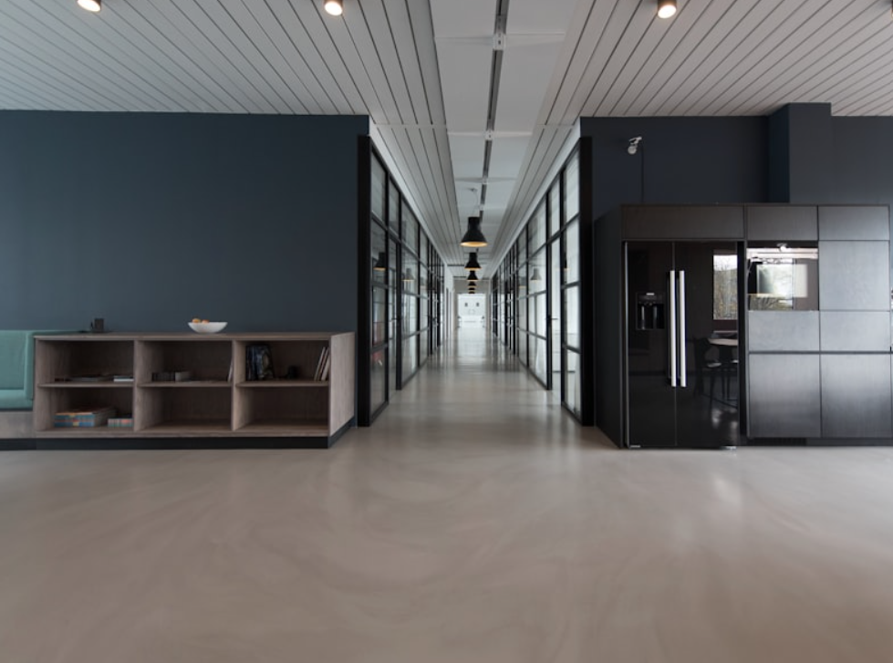

Flight Standby Run
走るチカラを信じて、旅を進め
出発まであと数時間。その時間を、空港まわりを走る体験に。
この広い世界を、わくわくしながら生き抜くために。次のフライトが、もう冒険の一歩になる。
Introduction
乗り継ぎや早朝便で空港に長くいる時間。世界は冒険に満ちています。ただ過ごすより、近隣を走って体を動かし、同じ境遇の仲間と出会う。フライト待機ランは、その「待ち時間」を特別な体験に変えるビジネスモデルです。
空港周辺の安全なコースを案内し、距離やペースを選べるランを提供。旅人同士のつながりや、地域との交流の場にもなります。
Before
乗り継ぎまであと3時間。ラウンジで過ごすのもいいけど、なんとなくもったいない。毎日が謎解きの連続。そんなふうに悩んだことはありませんか？その答えは、一歩の向こうに。
Service
私たちは、待ち時間を「走る体験」に変える技術で、旅の価値を届けます。
乗り継ぎや早朝到着の「空白時間」を、運動とリフレッシュの時間に。出発までに体を整え、フライトを気持ちよく迎えられます。
空港周辺の安全で走りやすいルートを厳選。ガイド付きまたはセルフで、距離・ペースを選べるので初心者からランナーまで対応します。
同じ空港で時間を過ごすランナー同士が集まる場に。ビジネス・観光を問わず、旅の思い出がひとつ増えます。

After
ひと走りしたあとは、頭も体も軽い。空港のカフェやラウンジで、リラックスしながら仕事に取り組む。幾つものダンジョンをクリアしたその先に待つものは、分かち合う喜びと陽光きらめく新しい世界なのです。
待ち時間が「もったいない」から「ありがたい時間」に変わる体験を。
Features
目的や課題に寄り添いながら、旅の価値を最大限に引き出す仕組みをご用意しています。
主要空港や乗り継ぎの多い時間帯に合わせてランを設定。出発前の余裕時間に参加しやすいスケジュールで提供します。
3kmのショートから10km以上のロングまで、体調やフライトまでの時間に合わせてコースを選択可能。ウォークのみの参加オプションも用意します。
手荷物の一時預かりや、空港・提携施設のシャワー利用案内など、ラン後にそのまま搭乗できるようサポートします。
Flow
シンプルな3ステップで、あなたの冒険がはじまります。
フライト日時・空港に合わせてランを選択し、Webから申し込み
空港の集合ポイントで合流し、ガイドとともにコースを走る
シャワー・着替え後、そのまま搭乗手続きへ。体も心もすっきり